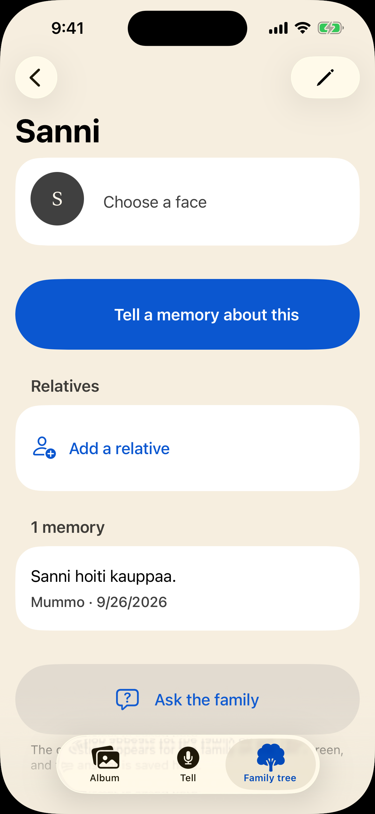

- IhmisetPeople
- 3
- MuistotMemories
- 0
- KuvatPhotos
- 1
Kinlore on perheen yhteinen muistiarkisto. Tämä on Virtasten arkisto: kolme jäsentä, yksi valokuva, ei yhtään muistoa. Kinlore is a family's shared memory archive. This one belongs to the Virtaset family: three members, one photograph, not a single memory in it.
Tämä on tyhjä hylly, ei rikkinäinen sovellus. Se joka tietää, ei täytä lomakkeita. This is an empty shelf, not a broken app. The one who knows does not fill in forms.
Tämä sivu on sovellus uudelleen rakennettuna selaimeen. Perhe on keksitty ja vastaus valmisteltu etukäteen, mutta jokainen luku tässä alla on oikeasti mitattu. This page is the app rebuilt in a browser. The family is made up and the answer was prepared in advance, but every number below it is a real measurement.
Sanni on arkistossa. Hänestä ei tiedetä mitään. Sanni is in the archive. Nothing about her is known.
Isovanhemmat tietävät, mutta eivät osaa kertoa sitä jäsennellysti. He eivät täytä lomakkeita eivätkä merkitse valokuvia. He puhuvat. Albumi- ja sukututkimussovellukset vaativat jäsenneltyä syötettä juuri siltä ihmiseltä, joka ei sitä koskaan tuota, ja niin tieto katoaa hautajaisissa.
Grandparents know, but they cannot explain it in a structured way. They do not fill in forms and they do not tag photographs. They talk. Album and genealogy apps demand structured input from the one person who will never produce it, and so the knowledge disappears at the funeral.
Sovelluksen 80-vuotias ei ole persoona vaan oma isovanhempani, joka testasi tämän. Siksi säännöt luetaan täällä rajoitteina eikä hyvinä aikomuksina, ja siksi paha vika ei ole kaatuminen vaan tarina jota kukaan ei saanut kerrottua.
The 80-year-old in that paragraph is not a persona. It is my own grandparent, who tested it. That is why the rules here read as constraints rather than good intentions, and why the failure that matters is not a crash but a story nobody could get told.

SukuRelatives
Ei vielä sukulaisiaNo relatives yet
The empty section is the point: a gap is an invitation, not an error.
Tyhjä osio on tarkoitus: aukko on kutsu eikä virhe.
KertominenThe telling
Vieritys kelaa. Nauhoitus, teksti ja sen jäsentyminen etenevät sen mukana. Scroll is the playhead here. The recording, the words and the record they become all follow it.
Kerro mitä muistatTell us what you remember
Paina ja ala puhuaPress and start talking
Siinä kuvassa ollaan sen mökin rannassa, se oli Puumalassa se mökki. Aino oli siinä vieressäni ja Toivo otti sen kuvan. Se oli joskus viideskymmenluvulla, en muista tarkkaan.
In that photograph we are at the cottage shore, the cottage was in Puumala. Aino was there beside me and Toivo took the picture. It was sometime in the fifties, I do not remember exactly.
Muisto tallennettuMemory saved
Kuva on otettu mökin rannassa Puumalassa. Aino oli vieressä ja Toivo otti kuvan.The photograph was taken at the cottage shore in Puumala. Aino was beside her and Toivo took it.
Vuosikymmen säilyy vuosikymmenenä. Päivämäärää ei keksitä. A decade is kept as a decade. No date is invented.
13 s, näytteen todellinen pituus. Puhe on syntetisoitua, ei oikea nauhoitus. 12 s, the sample's real length. The speech is synthetic rather than a real recording, and it is synthesised in English so the page can be heard in the language it is read in.
Kuulinko nimet oikein?Did I hear the names right?
Kysyisin vieläI would still ask
Sovellus ehdottaa, ihminen päättääThe app proposes, a human decides
That line is in the app itself, not written for this page.
Sovellus kuuli kaksi nimeä. Se ei tiedä keitä he ovat, eikä se arvaa sukulaisuutta, koska sitä ei sanottu ääneen. Kumpikin jää vahvistamatta siihen asti kunnes ihminen sanoo toisin, eivätkä ne näy sukupuussa faktana. Väärä sukulaisuus on pahempi kuin puuttuva. The app heard two names. It does not know who they are, and it does not guess how they are related, because nobody said. Both stay unconfirmed until a person says otherwise, and neither appears in the family tree as fact. A wrong relationship is worse than a missing one.
Vahvista tai hylkää. Sivu odottaa sinua. Confirm or reject. The page is waiting for you.
Sukupuu vasemmalla ei täyty vierittämällä. Se odottaa tätä. The tree in the corner does not fill in by scrolling. It is waiting for this.
Käyttäjä on 80. Se on mitattu, ei luvattu. The user is 80. That was measured, not promised.
Raja on 4,5:1, ja kaikki neljä iOS:n omaa väriä jäävät sen alle. Alin niistä kantaa juuri sitä riviä, jossa perhettä pyydetään tarkistamaan jotain. The threshold is 4.5:1, and all four of iOS's own colours are under it. The lowest one carries the very label that asks the family to check something.
Oikean sarakkeen luvut on mitattu ja kirjoitettu perusteluineen ylös, yhteen paikkaan. Kontrasti on se sääntö, jota silmä ei voi tarkistaa. The figures in the right column were measured, and written down with their reasoning in one place. Contrast is the one rule eyes cannot check.
| MihinWhat for | iOS antaaiOS gives | Kinlore käyttääKinlore uses |
|---|---|---|
| EhdotusProposal | 2.2:1 | 5.2:1 |
| VahvistusConfirmation | 1.8:1 | 5.4:1 |
| PoistoDestruction | 3.6:1 | 6.5:1 |
| TukitekstiSupporting text | 4.2:1 | 75 % 6.6:1 |
| KosketusalueTap target | 44 pt | 60 pt |
Aa-painike ylhäällä suurentaa myös tämän sivun. Jos jokin rikkoutuu suurimmalla tekstillä, se ei ole valmis. The Aa button at the top enlarges this page too. If a screen does not work at the largest text size, it is not done.
Helpoin kysymys ensin. Vastaus on yksi nimi.The easiest question first. The answer is one name.
Kuka sinun suvussasi tietää jotain, mitä kukaan ei ole kirjoittanut ylös? Who in your family knows something that nobody has written down?
Näin se jää talteenThis is how it is kept
Kinlorea ei voi vielä ladata mistään. Se osa joka merkitsee ei kuitenkaan odota sovellusta: kysy häneltä nyt, kun on vielä joku jolta kysyä. Kinlore cannot be downloaded anywhere yet. The part that matters does not wait for an app: ask them now, while there is still somebody to ask.